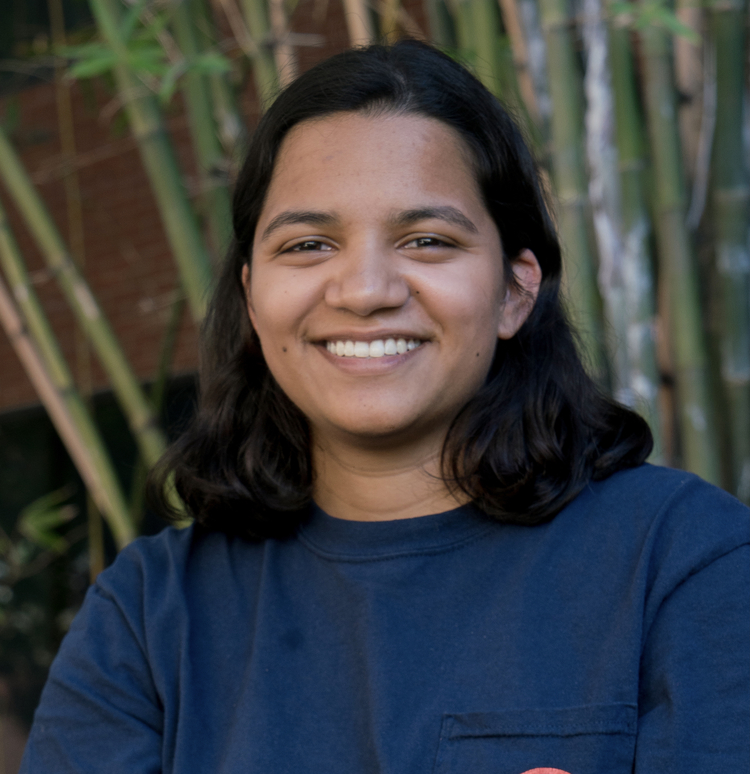
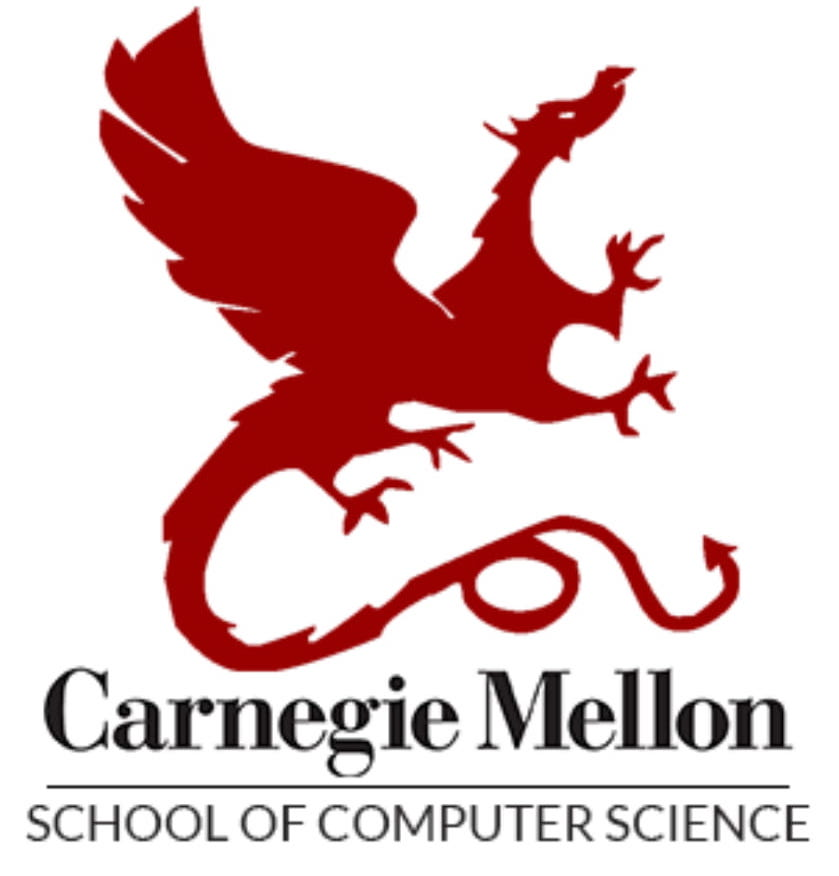

|
Leena Mathur
I am a PhD student at Carnegie Mellon University's School of Computer Science in the Language Technologies Institute.
My research focuses on the foundations of multimodal AI and embodied AI in real-world social interaction contexts, with applications to enhance human health and well-being.
At CMU, I am fortunate to be advised by Louis-Philippe Morency in the Multimodal Communication and Machine Learning Laboratory.
My work is generously supported by the NSF Graduate Research Fellowship.
I recently completed a BS in Computer Science, BA in Cognitive Science, and BA in Linguistics from the University of Southern California.
I am fortunate to have worked with wonderful research mentors — Maja Matarić at the Interaction Lab in USC's Robotics and Autonomous Systems Center, Khalil Iskarous at USC's Linguistics Department, Ralph Adolphs at Caltech, Michael Shindler at UC Irvine, and Rémi Lebret at the École Polytechnique Fédérale de Lausanne (EPFL).
My undergraduate work was generously supported by the Goldwater Scholarship, Astronaut Scholarship, and CRA Outstanding Undergraduate Researcher Award, as well as fellowships from USC, Caltech, and EPFL.
I am grateful for my experience learning from USC's AI community and my 4 years leading and growing the engineering school's student AI organization CAIS++, mentored by Bistra Dilkina from USC's Center for AI in Society. I now serve on the CAIS++ alumni advisory board.
Google Scholar /
Github /
LinkedIn /
Twitter
Email: lmathur_at_andrew_dot_cmu_dot_edu
Research Teaching Outreach & Service Honors Miscellaneous
|


|
- [Jul 2023] 📝 Paper accepted at ACM ICMI! We synthesize how affective phenomena have been studied in multimodal interaction, affective computing, and NLP, research, highlighting understudied areas and future directions. We will present this in October at ICMI in Paris!
- [May 2023] Co-organizing the Artificial Social Intelligence Workshop and Inaugural Social-IQ Challenge at ICCV 2023 in Paris. Check out our lab's new Social-IQ challenge -- we welcome participation!
- [Mar 2023] Proposal for the 1st Workshop on Social and Affective Intelligence (SAI) has been accepted at ACII 2023. Looking forward to co-organizing this workshop at MIT in September.
- [Jan 2023] Paper accepted! I will be presenting at IEEE FG 2023 in Hawaii during the first week of January 🏝
- [Aug 2022] I joined CMU's School of Computer Science to pursue my PhD!
- [Apr 2022] I am honored to receive the NSF Graduate Research Fellowship (2022-2027)
Papers ( * denotes joint first-authors)
|
|
[10]
Expanding the Role of Affective Phenomena in Multimodal Interaction Research
Leena Mathur, Maja J Matarić, and Louis-Philippe Morency
ACM International Conference on Multimodal Interaction (ICMI 2023)
Paper
|
|
[9]
Difference-Masking: Choosing What to Mask in Continued Pretraining
Alex Wilf*, Syeda Akter*, Leena Mathur, Paul Pu Liang, Sheryl Mathew, Mengrou Shou, Eric Nyberg, Louis-Philippe Morency
Pre-Print
|
|
[8]
Towards Intercultural Affect Recognition: Audio-Visual Affect Recognition in the Wild Across Six Cultures
Leena Mathur, Ralph Adolphs, and Maja J Matarić
IEEE International Conference on Automatic Face and Gesture Recognition, Workshop on Learning with Few or Without Annotated Face, Body and Gesture Data (FG 2023) [Oral]
Paper
|
|
[7]
Student misconceptions of dynamic programming: a replication study
Michael Shindler, Natalia Pinpin, Mia Markovic, Frederick Reiber, Jee Hoon Kim, Giles Pierre Nunez Carlos, Mine Dogucu, Mark Hong, Michael Luu, Brian Anderson, Aaron Cote, Matthew Ferland, Palak Jain, Tyler LaBonte, Leena Mathur, Ryan Moreno and Ryan Sakuma
Journal of Computer Science Education (CSE Vol. 32, No. 3, 2022)
Paper
|
|
[6]
Affect-Aware Deep Belief Network Representations for Multimodal Unsupervised Deception Detection
Leena Mathur and Maja J Matarić
IEEE International Conference on Automatic Face and Gesture Recognition (FG 2021) [Long Oral]
Paper
|
|
[5]
Modeling User Empathy Elicited by a Robot Storyteller
Leena Mathur*, Micol Spitale*, Hao Xi, Jieyun Li, and Maja J Matarić
International Conference on Affective Computing and Intelligent Interaction (ACII 2021) [Oral]
Paper
|
|
[4]
Speech Representations and Phoneme Classification for Preserving the Endangered Language of Ladin
Zane Durante*, Leena Mathur*, Eric Ye, Sichong Zhao, Tejas Ramdas, and Khalil Iskarous
Interspeech, Workshop on ML in Speech and Language Processing (Interspeech 2021)
Paper
|
|
[3]
Unsupervised Audio-Visual Subspace Alignment for High-Stakes Deception Detection
Leena Mathur and Maja J Matarić
IEEE International Conference on Acoustics, Speech, and Signal Processing (ICASSP 2021)
Paper
|
[2]
Introducing Representations of Facial Affect in Automated Multimodal Deception Detection
Leena Mathur and Maja J Matarić
ACM International Conference on Multimodal Interaction (ICMI 2020) [Oral, Best Paper Award Nomination (1 of 8 papers)] 🏆
Paper
|
|
[1]
Month-Long, In-Home Socially Assistive Robot for Children with Diverse Needs
Caitlyn Clabaugh, Shomik Jain, Balasubramanian Thiagarajan, Zhonghao Shi, Leena Mathur, Kartik Mahajan, Gisele Ragusa, and Maja J Matarić
International Symposium on Experimental Robotics (ISER 2018)
Paper
|
- Research team member in a large-scale CS education study, to inform algorithms curriculum development in universities (2021-2022); Paper published in the Journal of Computer Science Education (CSE Vol. 32, No. 3, 2022)
- USC Resident Assistant (RA) in residential colleges with ~1000 first-year students, co-taught RA curriculum (2019-2022)
- Undergraduate Teaching Assistant for USC's Department of Computer Science -- CS 170, Discrete Mathematics (2019)
- USC Joint Education Project Instructor; designed and taught an 8-week computer science class to third-grade students at 32nd Street School, Los Angeles (2019)
|
Outreach & Professional Service
|
- Program Committee: ACII 2023 (workshop track chair), ICMI 2023
- Reviewer: International Journal of Social Robotics
- Co-Organized No Joke: We're Talking About LLMs, a seminar and hackathon on large language models (2023)
- Leadership Team for the CMU AI Mentoring Program (2023 - present), mentor undergraduates in this program (2022-present)
- Organized CMU's PhD and MS Application Info-Session, Language Technologies Institute, School of Computer Science (2022)
- Volunteer & Panelist at CMU School of Computer Science OurCS Workshop for visiting undergraduate researchers (2022)
- Mentored undergraduates in the student branch of USC's Center for AI in Society, CAIS++ and USC Interaction Lab (2018-2022)
- Designed and taught AI and robotics workshops for 500+ USC students and Los Angeles K-12 students; initiated these programs through the Viterbi K-12 STEM Center, CAIS++, and USC Interaction Lab (2018-2022)
- Worked as a USC Resident Assistant (RA) in residential colleges with ~1000 first-year students, co-taught RA curriculum (2019-2022)
- Served as a judge at AthenaHacks, an annual hackathon with 400+ participants (2019, 2021, 2022)
- Mentored undergraduates in USC Women in Engineering Mentorship Program (2019)
- National Science Foundation Graduate Research Fellowship (2022-2027)
- CRA Outstanding Undergraduate Researcher Award [CRA post, USC News] (2022)
- USC Viterbi School of Engineering Award for Outstanding Research, recognizes one graduating student for research (2022)
- USC Albert Dorman Grand Challenge Scholar Award, recognizes one graduating student for research, academics, leadership, and service (2022)
- USC university-wide awards: Discovery Scholar, Global Scholar Prize, Renaissance Scholar, Order of Troy (2022)
- USC Department of Computer Science Award for Outstanding Research (2022)
- American Society for Engineering Education PSW Undergraduate Student Award (2022)
- Astronaut Scholarship (2021)
- Caltech Summer Undergraduate Research Fellowship (2021)
- USC Robotics Lab George Bekey Service Award, for contributions and mentorship in the USC robotics community (2021)
- Phi Beta Kappa (2021)
- Barry M. Goldwater Scholarship [USC News] (2020)
- Best Paper Award Nominee at ACM ICMI (2020)
- USC Provost's Undergraduate Research Fellowship (7 times, 2019-2021)
- École Polytechnique Fédérale de Lausanne (EPFL) Summer Computer Science Research Fellowship (2019)
Some resources regarding academia and research that I have found helpful:
- Paul Liang's repo which includes many of the highlighted items on this list (and more)
- Eugene Vinitsky's post on expectation setting during a PhD
- Pranav Rajpurkar's materials on AI research experiences
- Mor Harchol-Balter's description of the CS PhD application process
- Andrej Karpathy's survival guide for CS PhD students
- Tim Dettmers' guide to CS PhD admissions (with a focus on AI)
- Another golden guide from Tim Dettmers on how to choose a CS PhD program
- Alex Lang's resources on applying for the NSF GRFP
- Mallory Ladd's resources on applying for the NSF GRFP
- Andrej Karpathy's perspective on navigating undergraduate courses
Other:
I learned piano for ~13 years growing up and continue to enjoy piano. My favorite composers are Chopin, Brahms, Liszt, and Rachmaninoff.
last updated on July 21, 2023
created by modifying this wonderful template from Jon Barron.
|
|